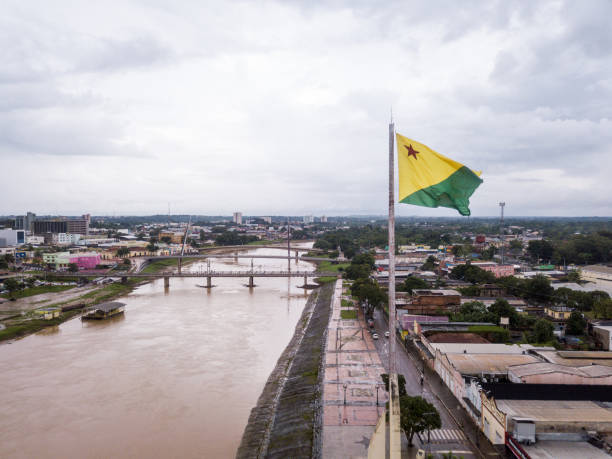

Acre é um estado localizado na Região Norte do Brasil, fazendo fronteira com os estados do Amazonas e Rondônia, além de países como o Peru e a Bolívia. Sua capital é Rio Branco. Originalmente parte da Bolívia, o território do Acre foi incorporado ao Brasil em 1903, por meio do Tratado de Petrópolis, após conflitos envolvendo seringueiros brasileiros na região, atraídos pela exploração da borracha.
